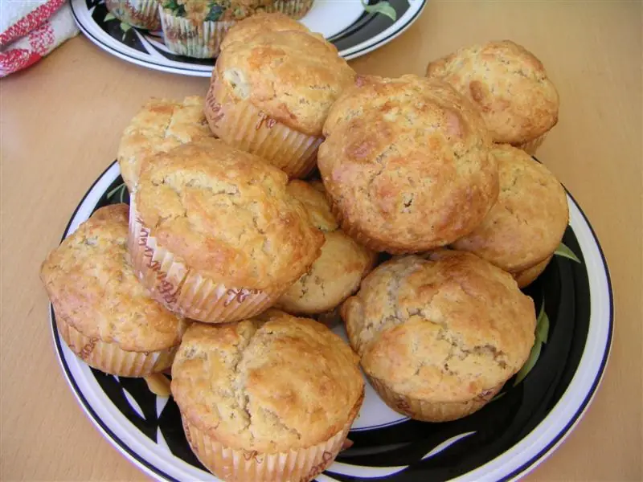

Фото: Wikimedia Commons, Public domain

Творожные маффины
Мягкие кексы из творога с минимумом муки, в формочках
40 мин4 порц.236 ккал на порциюБ 18 · Ж 8 · У 22Интернациональная кухня
Продукты на 4 порц.
- Творог 5%300 г
- Яйцо куриное2 шт
- Мука пшеничная3 ст. л.
- Сахар2 ст. л.
- Разрыхлитель1 ч. л.
- Ванильный сахар по желанию1 ч. л.
- Изюм по желанию2 ст. л.
- Растительное масло1 ч. л.
Как готовить
- Разогрейте духовку до 180 °C (средний жар) и смажьте маслом формочки для маффинов.
- Взбейте яйца с сахаром и ванильным сахаром до пены, добавьте творог и пробейте блендером до гладкости.
- Всыпьте муку с разрыхлителем и перемешайте ложкой. По желанию добавьте промытый изюм.
- Заполните 8 формочек на 3/4 высоты.
- Выпекайте 25 минут до румяного верха. Деревянная шпажка из середины должна выходить сухой.
Совет. Маффины немного опадают при остывании, это нормально для творожной выпечки. Храните в холодильнике до 3 дней.